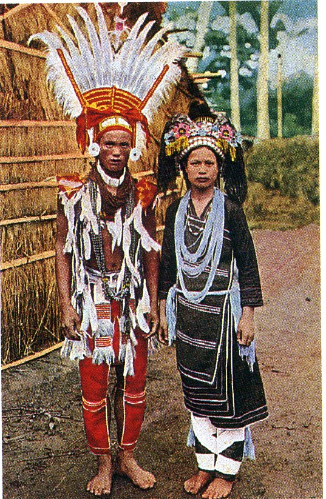
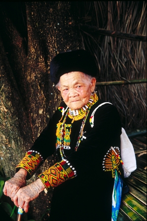
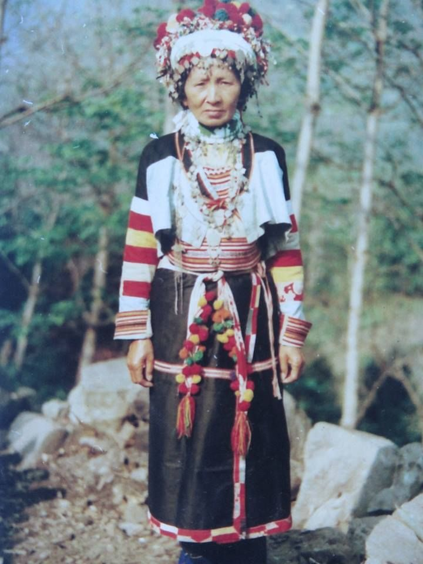
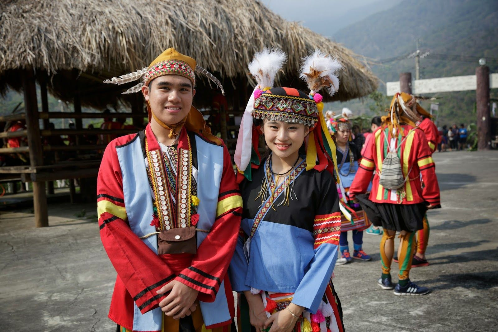
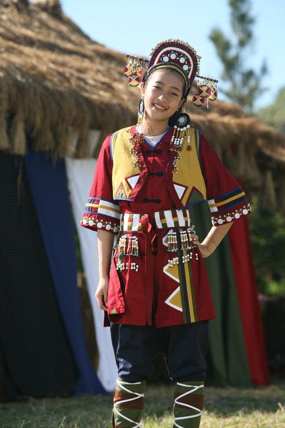

產品簡介產品簡介
產品簡介產品簡介|  | 阿美族服飾 阿美族的服裝一向給人色彩鮮豔、亮麗活潑的印象，其實阿美族的服飾分佈區域性很廣，每一區的阿美族因地區、部落、階級的不同而各有特色。北部阿美族以紅、黑、白三色為主；南部阿美族則流行黑、紫紅、黃、綠、紅、橘等色。 有認識阿美族的朋友享有5折優惠 |
|  | 排灣族服飾 排灣族的服裝和社會階層也息息相關，刺繡是其中最大的特色。「刺繡」也是排灣族全盛時期與平民最大不同之處。盛裝時的服飾上衣、披肩、長褲，都加上刺繡，除此之外，珠貝、皮毛、羽毛、獸牙、鷹羽、豹牙、豹皮，都成為肩飾、胸飾、背飾、腕飾上的裝飾用品。排灣族的貴族傳統服飾一律以華麗取勝。 排灣族的衣飾十分費工，一套華麗的服裝，往往要長達一年半載才能完工，雖然有共同的紋樣，表現在手工珠繡或針線的精巧手藝上，每件衣服卻都不一樣，充分表現排灣族在工藝上的創造力。 沒有認識阿美族沒關係，只要大學學號是1091530就可以享有8折優惠 |
|  | 卡那卡那富族服飾 男性傳統飾物除皮帽上的羽毛外，有額帶、耳墜、頭飾、腕飾等，據傳以往卡那卡那富族的男士較女子更愛飾物。 女性的飾物有耳飾、頸飾、腕飾、胸鍊珠等，服飾表現有頭巾，纏於頭部，方便行動。 帽子主要於盛典時穿戴，周圍以五顏六色花環裝飾。 另有上衣、腰裙、膝褲等配件。 |
|  | 阿拉魯哇族服飾 男性傳統服飾以山羊皮或山羌皮揉製皮衣、皮帽及皮褲；皮帽前鑲有貝殼、帽頂則縫有五根羽毛，其排列為左右各兩根老鷹羽毛，中間插有一根白色的帝雉尾巴羽毛。現代則以紅色布料為上衣，衣背上綴有五條三色線條，由左至右分別是黃、綠、白、綠、黃，象徵家族及族群向心力。 女性以傳統頭巾纏髮，插上公雞羽毛髮飾，服飾依照聚落可分為黑裙搭配藍色或白色長袖上衣兩種樣式；著藍色上衣主要在桃源里雁爾社，著白色上衣主要在高中里排剪社、塔鑞社和美瓏社。相傳製作公雞羽毛髮飾且配帶之，其典故是為了紀念流傳神話中幫助族人與太陽談判成功的公雞而來。 只要挑戰在林學榮身上插上公雞羽毛的髪飾，皆可享有9折的優惠 |
|  | 撒奇萊雅族服飾介紹 服裝的顏色主要分為土金色與暗紅色，土金色代表土地，喻撒奇萊雅族始祖由土地誕生，族人崇拜土地，以及1878年Komod Pazik大頭目說的「土地有心」。 暗紅色代表祖先的凝乾的鮮血，喻慎終追遠，勿忘西元1878年Takoboan事件與族群滅亡的慘痛歷史。 |
| 學榮名信片 只要買以上服飾任何一套，就贈送學榮名信片一張!!!!! 限量50張!!!!!!!! |